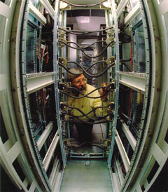
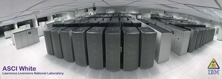
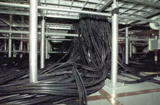

Андрей Борзенко
Суперкомпьютерами называют самые быстрые компьютеры. Их основное отличие от мэйнфреймов состоит в следующем: все ресурсы такого компьютера обычно направлены на то, чтобы решить одну или в крайнем случае несколько задач насколько возможно быстро, тогда как мэйнфреймы, как правило, выполняют довольно большое число задач, конкурирующих друг с другом. Бурное развитие компьютерной индустрии определяет относительность базового понятия - то, что десять лет назад можно было назвать суперкомпьютером, сегодня под это определение уже не подпадает. Существует и такое шутливое определение суперкомпьютера - это устройство, сводящее проблему вычислений к проблеме ввода-вывода. Впрочем, и в нем есть доля истины: часто единственным узким местом в быстродействующей системе остаются именно устройства ввода-вывода. Узнать, какие суперкомпьютеры в настоящее время имеют максимальную производительность, можно из официального списка пятисот самых мощных систем мира - Top500 (http://www.top500.org), который публикуется два раза в год.
В любом компьютере все основные параметры тесно связаны. Трудно себе представить универсальный компьютер, имеющий высокое быстродействие и мизерную оперативную память либо огромную оперативную память и небольшой объем дисков. По этой причине и суперкомпьютеры характеризуются в настоящее время не только максимальной производительностью, но и максимальным объемом оперативной и дисковой памяти. Обеспечение таких технических характеристик обходится довольно дорого - стоимость суперкомпьютеров чрезвычайно высока. Какие же задачи настолько важны, что требуют систем стоимостью в десятки и сотни миллионов долларов? Как правило, это фундаментальные научные или инженерные вычислительные задачи с широкой областью применения, эффективное решение которых возможно только при наличии мощных вычислительных ресурсов. Вот лишь некоторые области, где возникают задачи подобного рода:
- предсказания погоды, климата и глобальных изменений в атмосфере;
- науки о материалах;·
- построение полупроводниковых приборов;
- сверхпроводимость;
- структурная биология;
- разработка фармацевтических препаратов;
- генетика человека;
- квантовая хромодинамика;
- астрономия;
- автомобилестроение;
- транспортные задачи;
- гидро- и газодинамика;
- управляемый термоядерный синтез;
- эффективность систем сгорания топлива;
- разведка нефти и газа;
- вычислительные задачи в науках о Мировом океане;
- распознавание и синтез речи;
- распознавание изображений.
Суперкомпьютеры считают очень быстро благодаря не только использованию самой современной элементной базы, но и новым решениям в архитектуре систем. Основное место здесь занимает принцип параллельной обработки данных, воплощающий идею одновременного (параллельного) выполнения нескольких действий. Параллельная обработка имеет две разновидности: конвейерность и собственно параллельность. Суть конвейерной обработки заключается в том, чтобы выделить отдельные этапы выполнения общей операции, причем каждый этап, выполнив свою работу, передает результат следующему, одновременно принимая новую порцию входных данных. Очевидный выигрыш в скорости обработки получается за счет совмещения прежде разнесенных во времени операций.
Если некое устройство выполняет одну операцию за единицу времени, то тысячу операций оно выполнит за тысячу единиц. Если имеется пять таких же независимых устройств, способных работать одновременно, то ту же тысячу операций система из пяти устройств может выполнить уже не за тысячу, а за двести единиц времени. Аналогично система из N устройств ту же работу выполнит за 1000/N единиц времени.
Конечно, сегодня параллелизмом в архитектуре компьютеров уже мало кого удивишь. Все современные микропроцессоры используют тот или иной вид параллельной обработки даже в рамках одного кристалла. Вместе с тем сами эти идеи появились очень давно. Изначально они внедрялись в самых передовых, а потому единичных компьютерах своего времени. Здесь особая заслуга принадлежит компаниям IBM и Control Data Corporation (CDC). Речь идет о таких нововведениях, как разрядно-параллельная память, разрядно-параллельная арифметика, независимые процессоры ввода-вывода, конвейер команд, конвейерные независимые функциональные устройства и т. д.
Обычно слово "суперкомпьютер" ассоциируется с компьютерами марки Cray, хотя сегодня это уже далеко не так. Разработчиком и главным конструктором первого суперкомпьютера был Сеймур Крэй - один из самых легендарных личностей в компьютерной отрасли. В 1972 г. он уходит из компании CDC и основывает собственную компанию Cray Research. Первый суперкомпьютер CRAY-1 был разработан через четыре года (в 1976 г.) и имел векторно-конвейерную архитектуру с 12 конвейерными функциональными устройствами. Пиковая производительность Cray-1 составляла 160 млн операций/с (время такта 12,5 нс), а цикл 64-разрядной оперативной памяти (которая могла расширяться до 8 Мбайт) занимал 50 нс. Главным новшеством было, конечно, введение векторных команд, работающих с целыми массивами независимых данных и позволяющих эффективно использовать конвейерные функциональные устройства.
На протяжении 60-80-х годов внимание мировых лидеров по производству суперкомпьютеров было сосредоточено на изготовлении вычислительных систем, хорошо справляющихся с решением задач на большие объемы вычислений с плавающей точкой. Недостатка в таких задачах не ощущалось - почти все они были связаны с ядерными исследованиями и аэрокосмическим моделированием и велись в интересах военных. Стремление достичь максимальной производительности в самые сжатые сроки означало, что критерием оценки качества системы была не ее цена, а быстродействие. Например, суперкомпьютер Cray-1 стоил тогда от 4 до 11 млн долл. в зависимости от комплектации.
|  | В процессе настройки системы.
|
На рубеже 80-90-х гг. закончилась "холодная" война и на смену военным заказам пришли коммерческие. К тому времени промышленность достигла больших успехов в производстве серийных процессоров. Они обладали примерно той же вычислительной мощностью, что и заказные, но были значительно дешевле. Использование стандартных комплектующих и изменяемое количество процессоров позволило решить проблему масштабируемости. Теперь с увеличением вычислительной нагрузки можно было повышать производительность суперкомпьютера и его периферийных устройств, добавляя новые процессоры и устройства ввода-вывода. Так, в 1990 г. появился суперкомпьютер Intel iPSC/860 с числом процессоров, равным 128, который показал на тесте LINPACK производительность 2,6 Гфлопс.
Тесты LINPACKЭталонные тесты LINPACK базируются на решении системы линейных уравнений с плотно заполненной матрицей коэффициентов над полем действительных чисел методом исключения Гаусса. Вещественные числа, как правило, представляются с полной точностью. Благодаря большому числу операций над вещественными числами результаты LINPACK принято считать эталоном производительности аппаратно-программной конфигурации в областях, интенсивно использующих сложные математические вычисления. |
В ноябре прошлого года была опубликована 18-я редакция списка 500 мощнейших компьютеров мира - Top500. Лидером списка по-прежнему остается корпорация IBM (http://www.ibm.com), которой принадлежит 32% установленных систем и 37% от общей производительности. Интересной новостью стало появление Hewlett-Packard на втором месте по количеству систем (30%). При этом, поскольку все эти системы относительно невелики, то их суммарная производительность составляет всего 15% от всего списка. Ожидается, что после слияния с Compaq обновленная компания займет доминирующее положение в этом списке. Далее по количеству компьютеров в списке идут SGI, Cray и Sun Microsystems.
Самым мощным суперкомпьютером мира оставалась по-прежнему система ASCI White (к ней мы еще вернемся), установленная в Ливерморской лаборатории (США) и показавшая производительность 7,2 Тфлопс на тесте LINPACK (58% от пиковой производительности). На втором месте стояла система Compaq AlphaServer SC, установленная в Питтсбургском суперкомпьютерном центре с производительностью в 4 Тфлопс. Замыкает список система Cray T3E с производительностью на LINPACK в 94 Гфлопс.
Стоит отметить, что список включал уже 16 систем с производительностью более 1 Тфлопс, половина из которых установлены IBM. Стабильно увеличивается число систем, представляющих собой кластеры из небольших SMP-блоков, - сейчас в списке уже 43 такие системы. Однако большинство в списке по-прежнему за массивно-параллельными системами (50%), за которыми идут кластеры, состоящие из больших SMP-систем (29%).
Типы архитектур
Основной параметр классификации параллельных компьютеров - наличие общей или распределенной памяти. Нечто среднее представляют собой архитектуры, где память физически распределена, но логически общедоступна. С аппаратной точки зрения для реализации параллельных систем напрашиваются две основные схемы. Первая - несколько отдельных систем, с локальной памятью и процессорами, взаимодействующих в какой-либо среде посредством посылки сообщений. Вторая - системы, взаимодействующие через разделяемую память. Не вдаваясь пока в технические детали, скажем несколько слов о типах архитектур современных суперкомпьютеров.
Идея массивно-параллельных систем с распределенной памятью (Massively Parallel Processing, MPP) довольно проста. Для этой цели берутся обычные микропроцессоры, каждый из которых снабжают своей локальной памятью и соединяют посредством некоей коммутационной среды. Достоинств у такой архитектуры много. Если нужна высокая производительность, то можно добавить еще процессоров, а если ограничены финансы или заранее известна требуемая вычислительная мощность, то легко подобрать оптимальную конфигурацию. Однако у MPP есть и недостатки. Дело в том, что взаимодействие между процессорами идет намного медленнее, чем обработка данных самими процессорами.
У параллельных компьютеров с общей памятью вся оперативная память разделяется между несколькими одинаковыми процессорами. Это снимает проблемы предыдущего класса, но добавляет новые. Дело в том, что число процессоров, имеющих доступ к общей памяти, по чисто техническим причинам нельзя сделать большим.
Основные особенности векторно-конвейерных компьютеров - это, конечно, конвейерные функциональные устройства и набор векторных команд. В отличие от традиционного подхода векторные команды оперируют целыми массивами независимых данных, что позволяет эффективно загружать доступные конвейеры.
Последнее направление, строго говоря, не является самостоятельным, а скорее представляет собой комбинации предыдущих трех. Из нескольких процессоров (традиционных или векторно-конвейерных) и общей для них памяти формируется вычислительный узел. Если полученной вычислительной мощности недостаточно, то объединяют несколько узлов высокоскоростными каналами. Как известно, подобную архитектуру называют кластерной.
MPP-системы
Массово-параллельные масштабируемые системы предназначены для решения прикладных задач, требующих большого объема вычислений и обработки данных. Рассмотрим их подробнее. Как правило, они состоят из однородных вычислительных узлов, включающих:
- один или несколько центральных процессоров;
- локальную память (прямой доступ к памяти других узлов невозможен);
- коммуникационный процессор или сетевой адаптер;
- иногда накопители на жестких дисках и/или другие устройства ввода-вывода.
Кроме того, в систему могут быть добавлены специальные узлы ввода-вывода и управляющие узлы. Все они связаны через некоторую коммуникационную среду (высокоскоростная сеть, коммутатор и т. п.). Что касается ОС, то здесь есть два варианта. В первом случае полноценная ОС работает только на управляющей машине, тогда как на каждом узле работает сильно урезанный вариант ОС, обеспечивающий только работу расположенной в нем ветви параллельного приложения. В другом случае на каждом узле работает полноценная UNIX-подобная ОС.
Число процессоров в системах с распределенной памятью теоретически ничем не ограничено. С помощью подобных архитектур можно строить масштабируемые системы, производительность которых растет линейно с увеличением числа процессоров. Кстати, сам термин "массивно-параллельные системы" применяется обычно для обозначения таких масштабируемых компьютеров с большим числом (десятки и сотни) узлов. Масштабируемость вычислительной системы необходима для пропорционального ускорения вычислений, но ее, увы, недостаточно. Чтобы получить адекватный выигрыш при решении задачи, требуется еще и масштабируемый алгоритм, способный загрузить полезными вычислениями все процессоры суперкомпьютера.
Напомним, что существуют две модели выполнения программ на многопроцессорных системах: SIMD (single instruction stream - multiple data streams) и MIMD (multiple instructions streams - multiple data streams). Первая предполагает, что все процессоры выполняют одну и ту же команду, но каждый над своими данными. Во второй каждый процессор обрабатывает свой поток команд.
В системах с распределенной памятью для пересылки информации от процессора к процессору необходим механизм передачи сообщений по сети, связывающей вычислительные узлы. Чтобы абстрагироваться от подробностей функционирования коммуникационной аппаратуры и программировать на высоком уровне, обычно пользуются библиотеками передачи сообщений.
Суперкомпьютеры Intel
Корпорация Intel (http://www.intel.com) хорошо известна в мире суперкомпьютеров. Ее многопроцессорные компьютеры Paragon с распределенной памятью стали такой же классикой, как векторно-конвейерные компьютеры от Cray Research.
Intel Paragon использует в одном узле пять процессоров i860 ХР с тактовой частотой 50 МГц. Иногда в один узел помещают процессоры разных типов: скалярный, векторный и коммуникационный. Последний служит для того, чтобы разгрузить основной процессор от выполнения операций, связанных с передачей сообщений.
Самая существенная характеристика новой параллельной архитектуры - тип коммуникационного оборудования. Именно от него зависят два наиболее важных показателя работы суперкомпьютера - скорость передачи данных между процессорами и накладные расходы на передачу одного сообщения.
Межсоединение сконструировано таким образом, чтобы обеспечить высокую скорость обмена сообщениями при минимальной задержке. Оно обеспечивает соединение более тысячи гетерогенных узлов по топологии двухмерной прямоугольной решетки. Однако при разработке большинства приложений можно считать, что любой узел непосредственно связан со всеми другими узлами. Межсоединение масштабируемо: его пропускная способность возрастает с увеличением числа узлов. При конструировании разработчики стремились минимизировать участие в передаче сообщений тех процессоров, которые выполняют пользовательские процессы. С этой целью введены специальные процессоры обработки сообщений, которые располагаются на плате узла и отвечают за отработку протокола обмена сообщениями. В результате основные процессоры узлов не отвлекаются от решения задачи. В частности, не происходит достаточно дорогостоящего переключения с задачи на задачу, а решение прикладных задач идет параллельно с обменом сообщениями.
Собственно передача сообщений осуществляется системой маршрутизации, основанной на компонентах маршрутизатора узлов сети (Mesh Router Components, MRC). Для доступа MRC данного узла к его памяти в узле имеется еще специальный интерфейсный сетевой контроллер, который представляет собой заказную СБИС, обеспечивающую одновременную передачу в память узла и обратно, а также отслеживающую ошибки при передаче сообщений.
Модульное строение Intel Paragon способствует не только поддержанию масштабируемости. Оно позволяет рассчитывать на то, что данная архитектура послужит основой для новых компьютеров, базирующихся на иных микропроцессорах или использующих новые технологии обмена сообщениями. Масштабируемость опирается также на сбалансированность различных блоков суперкомпьютера на самых разных уровнях; в противном случае с ростом числа узлов где-либо в системе может появиться узкое место. Так, скорость и емкость памяти узлов балансируются с пропускной способностью и задержками межсоединения, а производительность процессоров внутри узлов - с пропускной способностью кэш-памяти и оперативной памяти и т. д.
До недавнего времени одним из самых быстродействующих компьютеров был Intel ASCI Red - детище ускоренной стратегической компьютерной инициативы ASCI (Accelerated Strategic Computing Initiative). В этой программе участвуют три крупнейшие национальные лаборатории США (Ливерморская, Лос-Аламосская и Sandia). Построенный по заказу Министерства энергетики США в 1997 г., ASCI Red объединяет 9152 процессора Pentium Pro, имеет 600 Гбайт суммарной оперативной памяти и общую производительность 1800 млрд операций в секунду.
Суперкомпьютеры IBM
Когда на компьютерном рынке появились универсальные системы с масштабируемой параллельной архитектурой SP (Scalable POWER parallel) корпорации IBM (http://www.ibm.com), они достаточно быстро завоевали популярность. Сегодня подобные системы работают в различных прикладных областях - таких, как вычислительная химия, анализ аварий, проектирование электронных схем, сейсмический анализ, моделирование водохранилищ, поддержка систем принятия решений, анализ данных и оперативная обработка транзакций. Успех систем SP определяется прежде всего их универсальностью, а также гибкостью архитектуры, базирующейся на модели распределенной памяти с передачей сообщений.
Вообще говоря, суперкомпьютер SP - это масштабируемая массивно-параллельная вычислительная система общего назначения, представляющая собой набор базовых станций RS/6000, соединенных высокопроизводительным коммутатором. Действительно, кому не известен, например, суперкомпьютер Deep Blue, который сумел обыграть в шахматы Гарри Каспарова? А ведь одна из его модификаций состоит из 32 узлов (IBM RS/6000 SP), базирующихся на 256 процессорах P2SC (Power Two Super Chip).
Семейство RS/6000 - это второе поколение компьютеров IBM, основанное на архитектуре с ограниченным набором команд (RISC), разработанной корпорацией в конце 70-х годов. Благодаря этой концепции для выполнения всей работы в компьютерной системе используется очень простой набор команд. Поскольку команды просты, они могут исполняться с очень высокой скоростью а также обеспечивают более эффективную реализацию исполняемой программы. Семейство RS/6000 основано на архитектуре POWER (архитектура с производительностью, оптимизированной за счет применения модернизированного RISC) и ее производных - PowerPC, P2SC, POWER3 и т. д. Поскольку архитектура POWER сочетает концепции архитектуры RISC с некоторыми более традиционными концепциями, в результате получается система с оптимальной общей производительностью.
Система RS/6000 SP предоставляет мощность нескольких процессоров для решения самых сложных вычислительных задач. Система коммутации SP - это новейшая разработка IBM в области широкополосной межпроцессорной связи без задержек для эффективных параллельных вычислений. Несколько разновидностей узлов процессора, изменяемые размеры фрейма (стойки) и разнообразные дополнительные возможности ввода-вывода обеспечивают подбор наиболее подходящей конфигурации системы. SP поддерживается лидирующими производителями ПО в таких областях, как параллельные базы данных и обработка транзакций в реальном времени, а также основными производителями технического ПО в таких областях, как обработка сейсмических данных и инженерное конструирование.
IBM RS/6000 SP расширяет возможности приложений благодаря параллельной обработке. Система снимает ограничения по производительности, помогает избежать проблем, связанных с масштабированием и присутствием неделимых, отдельно выполняемых фрагментов. Установленные по всему миру более чем у тысячи клиентов, SP предлагают решения для сложных и объемных технических и коммерческих приложений.
Основной блок SP - это процессорный узел, который имеет архитектуру рабочих станций RS/6000. Существует несколько типов SP-узлов: Thin, Wide, High, отличающихся рядом технических параметров. Так, например, High-узлы на базе POWER3-II включают до 16 процессоров и до 64 Гбайт памяти, а вот Thin-узлы допускают не более 4 процессоров и 16 Гбайт памяти.
Система масштабируется до 512 узлов, при этом возможно совмещение узлов различных типов. Узлы устанавливаются в стойки (до 16 узлов в каждой). SP может практически линейно масштабировать диски вместе с процессорами и памятью, что позволяет получать реальный доступ к терабайтам памяти. Такое увеличение мощности упрощает наращивание и расширение системы.
Узлы связаны между собой высокопроизводительным коммутатором (IBM high-performance switch), который имеет многостадийную структуру и работает с коммутацией пакетов.
Каждый узел SP работает под управлением полноценной ОС AIX, благодаря чему можно использовать тысячи уже существующих приложений для этой ОС. Кроме того, узлы системы можно объединять в группы. К примеру, несколько узлов могут выполнять роль серверов Lotus Notes, в то время как все остальные - обрабатывать параллельную базу данных.
Управление большими системами - это всегда сложная задача. SP использует для этих целей одну графическую консоль, на которой отображаются состояния аппаратного и программного обеспечения, выполняемые задачи и информация о пользователях. Системный администратор при помощи такой консоли (управляющей рабочей станции) и прилагаемого к SP программного продукта PSSP (Parallel Systems Support Programs) решает задачи управления, в том числе управления защитой паролями и полномочиями пользователей, учета выполняемых задач, управления печатью, системного мониторинга, запуска и выключения системы.
Самые-самые
Как уже отмечалось, согласно Top500 (таблица), самый мощный суперкомпьютер современности - ASCI White, занимающий площадь размером в две баскетбольные площадки и установленный в Ливерморской национальной лаборатории. Он включает 512 SMP-узлов на базе 64-разрядных процессоров POWER3-II (в общей сложности 8192 процессора) и использует новую коммуникационную технологию Colony с пропускной способностью около 500 Мбайт/с, что почти в четыре раза быстрее коммутатора SP high-performance switch.
|  | Суперкомпьютер ASCI White.
|
Первая десятка Top500 (18-я редакция)
| Позиция | Производитель | Компьютер | Где установлен | Страна | Год | Число процес-соров |
| 1 | IBM | ASCI White | Ливерморская национальная лаборатория | США | 2000 | 8192 |
| 2 | Compaq | AlphaServer SC | Питтсбургский суперкомпью-терный центр | США | 2001 | 3024 |
| 3 | IBM | SP Power3 | Институт исследований в области энергетики NERSC | США | 2001 | 3328 |
| 4 | Intel | ASCI Red | Национальная лаборатория Sandia | США | 1999 | 9632 |
| 5 | IBM | ASCI Blue Pacific | Ливерморская национальная лаборатория | США | 1999 | 5808 |
| 6 | Compaq | AlphaServer SC | Лос-Аламосская национальная лаборатория | США | 2001 | 1536 |
| 7 | Hitachi | SR8000/MPP | Токийский университет | Япония | 2001 | 1152 |
| 8 | SGI | ASCI Blue Mountain | Лос-Аламосская национальная лаборатория | США | 1998 | 6144 |
| 9 | IBM | SP Power3 | Океанографи-ческий центр NAVOCEANO | США | 2000 | 1336 |
| 10 | IBM | SP Power3 | Немецкая служба погоды | Германия | 2001 | 1280 |
Архитектура нового суперкомпьютера основана на зарекомендовавшей себя массивно-параллельной архитектуре RS/6000 и обеспечивает производительность в 12,3 Тфлопс (триллионов операций в секунду). Система включает в общей сложности 8 Тбайт оперативной памяти, распределенной по 16-процессорным SMP-узлам, и 160 Тбайт дисковой памяти. Доставка системы из лабораторий IBM в штате Нью-Йорк в Ливермор (Калифорния) потребовалось 28 грузовиков-трейлеров.
Все узлы системы работают под управлением ОС AIX. Суперкомпьютер используется учеными Министерства энергетики США для расчета сложных трехмерных моделей с целью поддержания ядерного оружия в безопасном состоянии. Собственно ASCI White - это третий шаг в пятиступенчатой программе ASCI, которая планирует создание нового суперкомпьютера в 2004 г. Вообще говоря, ASCI White состоит из трех отдельных систем, среди которых самой большой является White (512 узлов, 8192 процессора), а есть еще Ice (28 узлов, 448 процессоров) и Frost (68 узлов, 1088 процессоров).
Предшественником ASCI White был суперкомпьютер Blue Pacific (другое название ASCI Blue), включающий 1464 четырехпроцессорных узла на базе кристаллов PowerPC 604e/332 МГц. Узлы связаны в единую систему с помощью кабелей общей длиной почти в пять миль, а площадь машинного зала составляет 8 тыс. квадратных футов. Система ASCI Blue состоит в общей сложности из 5856 процессоров и обеспечивает пиковую производительность в 3,88 Тфлопс. Суммарный объем оперативной памяти составляет 2,6 Тбайт.
|  | Суперкомпьютер - это километры кабелей.
|
Американский национальный центр по исследованию атмосферы (NCAR) выбрал IBM в качестве поставщика самого мощного в мире суперкомпьютера, предназначенного для прогнозирования климатических изменений. Система, известная под именем Blue Sky ("Синее небо"), после окончательного ввода в эксплуатацию в этом году на порядок увеличит возможности NCAR в области моделирования климата. Ядром Blue Sky станут суперкомпьютер IBM SP и системы IBM eServer p690, применение которых позволит добиться пиковой производительности почти в 7 Тфлопс при объеме дисковой подсистемы IBM SSA в 31,5 Тбайт.
Суперкомпьютер, получивший название "Синий шторм" (Blue Storm), создается по заказу Европейского центра среднесрочных прогнозов погоды (European Centre for Medium-Range Weather Forecasts - ECMWF). Blue Storm будет в два раза мощнее ASCI White. Для его создания необходимо 100 серверов IBM eServer p690, также известных как Regatta. Каждый системный блок размером с холодильник содержит более тысячи процессоров. В 2004 г. "Синий шторм" будет оснащен серверами нового поколения p960, которые сделают его еще в два раза мощнее. Суперкомпьютер будет работать под управлением ОС AIX. Первоначально общая емкость накопителей Blue Storm составит 1,5 петабайт, вычислительная мощь - около 23 Тфлопс. Система будет весить 130 т, а по мощи будет в 1700 раз превосходить шахматный суперкомпьютер Deep Blue.
Исследователи IBM совместно с Ливерморской национальной лабораторией ведут работы над компьютерами Blue Gene/L и Blue Gene/C. Эти компьютеры - часть начатого еще в 1999 г. с целью изучения белков 5-летнего проекта Blue Gene, в который было вложено 100 млн долл. Создание нового суперкомпьютера Blue Gene/L (200 Тфлоп) будет завершено в 2004 г. - на полгода-год раньше, чем ожидается завершение работ над более мощным компьютером Blue Gene/C (1000 Тфлоп). Проектная производительность Blue Gene/L будет, таким образом, превышать суммарную производительность 500 самых мощных компьютеров в мире. При этом новый суперкомпьютер занимает площадь, равную всего половине теннисного корта. Инженеры IBM поработали и над снижением потребления энергии - его удалось уменьшить в 15 раз.
Earth SimulatorПо мнению журнала New Scientist, в новой, 19-й версии списка суперкомпьютеров Top500 на первое место выйдет суперкомпьютерная система для проекта Earth Simulator корпорации NEC. Она установлена в японском Институте наук о Земле (Yokohama Institute for Earth Sciences) в г. Канагава, префектура Йокогама. Разработчики утверждают, что ее пиковая производительность может достигать 40 Тфлопс. Суперкомпьютер Earth Simulator предназначен для моделирования климатических изменений на основе данных, которые поступают со спутников. По утверждению представителей NEC, высокая производительность компьютера достигнута за счет использования специально разработанных векторных процессоров. Система базируется на 5120 таких процессорах, объединенных в 640 узлов SX-6 (по 8 процессоров в каждом). Суперкомпьютер работает под управлением ОС SUPER-UX. В числе средств разработки установлены компиляторы языков C/C++, Fortran 90 и HPF, а также средства автоматической векторизации, реализация интерфейса MPI-2 и математическая библиотека ASL/ES. Вся машина занимает площадь трех теннисных кортов (50x65 м) и использует несколько километров кабеля. |